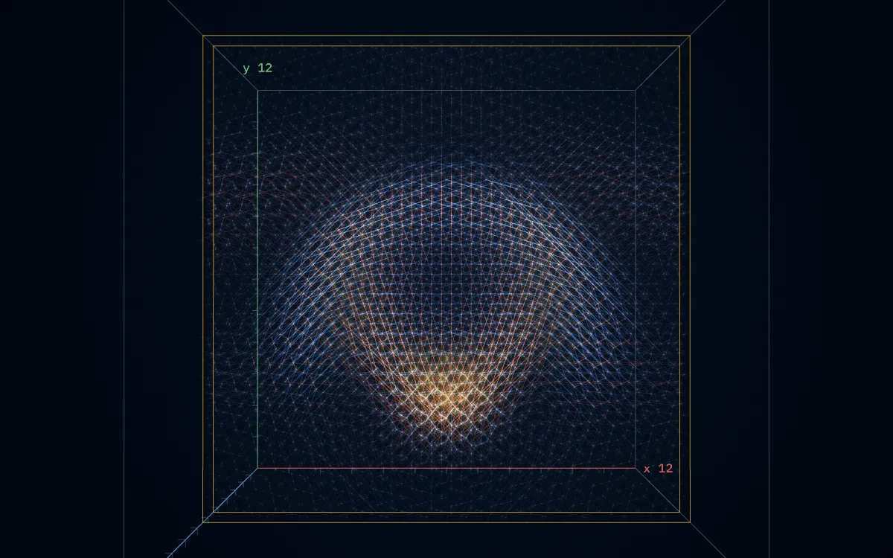

01
Schwerewelle
Ein Schwerewellen-Paket (transversal-spurfrei, zirkular um z) läuft von der Boxmitte als Kugelschale nach außen. Gezeigt: Dehnung der Kanten und Energie in einer Scheibe durch die Mitte.
A gravitational-wave packet (TT, circular about z) spreads from the box centre as a spherical shell. Shown: edge strain and energy in a slice through the centre.
12×12×12 Zellen · 69 120 Ecken · 470 016 Kanten · 17 Bilder, t = 0 bis 4 a/c · 55 MB